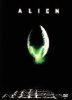

|
 |
| Títol |
Alien (ID: 4727) |
| Gràfic comparatiu de vots |
 |
|
|
|
|
|
|
|
|
|
| 1 |
2 |
3 |
4 |
5 |
6 |
7 |
8 |
9 |
10 |
|
| eLink |
ed2k://|file|Alien%20[1979]%20[DVD+VHS%20catal%C3% ... |
| Puntua |
Vots: 6 | Puntuació: |
| Detalls |
Mida: 1.37 Gb | Format: AVI |  Historial eD2K Historial eD2K |
| Altres |
Visualitzacions: 898 | Descàrregues: 223 | Comentaris: 2 |
| Enviat |
Per Nava el 27/03/2006 |
| Imatge |
 Alien.png (13.7K) Alien.png (13.7K) |
|
 Xvid català. DVD+VHS. Àudio dual: català - anglès. Àudio per Mutant. Muntat per Nava
Fitxa tècnica:
Títol Original: Alien
Direcció: Ridley Scott
Nacionalitat: Gran Bretanya.
Any: 1979.
Durada: 116 min.
Guió: Dan O'Bannon (Novel·la: Joseph Conrad)
Actors: Tom Skerritt (Dallas), Sigourney Weaver (Ripley), Veronica Cartwright (Lambert), Harry Dean Stanton (Brett), John Hurt (Kane), Ian Holm (Ash), Yaphet Kotto (Parker), Bolaji Badejo (Alien) i Helen Horton (veu de Mare).
Producció: Gordon Carroll, David Giler i Walter Hill.
Fotografia: Derek Vanlint.
Muntatge: Terry Rawlings i Peter Weatherley.
Disseny de producció: Michael Seymour.
Direcció artística: Roger Christian.
Vestuari: John Mollo.
Música: Jerry Goldsmith.
Sinopsi:
Quan la nau comercial Nostromo, de retorn a la Terra, intercepta una senyal dauxili procedent dun planeta proper, els set tripulants són despertats del seu estat dhibernació per a investigar el seu origen. Després dun mal aterratge sobre el planeta, alguns membres de la tripulació deixen la nau per a explorar làrea. Al mateix temps descobreixen la colònia oculta duna estranya criatura amagada en les restes duna nau. Un darrere laltre, els tripulants seran víctimes de la terrible bèstia de matar que han pujar a bord.
Informació addicional:
Alien és una obra de ciència ficció / terror caracteritzada pel suspens i la claustrofòbia. Amb una atmosfera molt diferent de qualsevol altra de les obres del gènere estrenades amb anterioritat, la pel·lícula del director britànic sallunya dels clàssics decorats dimpol·lutes naus per a endinsar-se en els estrets i foscos passadissos duna laberíntica Nostromo.
La historia de Dan OBannon, inspirada en pel·lícules com It: The Terror From Beyond Space y Ten Litle Indians in space arriba a la petita productora Brandywine, que està interessada en fer dAlien la seva primera producció. Walter Hill, integrant de la productora i encarregat de revisar el guió adverteix un excessiu cost per a les possibilitats de la independent Brandywine, cosa que fa que sen vagi a la Fox. Aquesta, interessada en el projecte, acaba aportant un total de 10 milions de dòlars per al desenvolupament del film. Per a dirigir la pel·lícula, David Giler escull a Ridley Scott, un director procedent de la publicitat i amb una sola pel·lícula realitzada fins aleshores (The Duellist, 1977). El guió original va ser modificat i se li va afegir un androide, interpretat per Ian Holm, per tal devitar semblances amb 2001: Una odissea espacial, de forma que realitzés una part del paper assignat en un principi a la computadora MARE del Nostromo.
La criatura dAlien fou dissenyada per H.R. Giger, un pintor surrealista suïs que a partir dun estrany us del cos humà combinat amb aparells mecànics crea monstres i decorats mai vistos pel públic, cosa que el va fer guanyar un Oscar de lAcadèmia. De fet, tot allò que soculta a lespectador és el que fa que el film sigui terrorífic. Per evitar que es descobreixi a lhome que estava sota el vestit, el director manté a Alien entre les ombres, mai lenfoca durant llargs períodes de temps i sempre apareix del no res. En el desenvolupament dels decorats també hi va participar Jean Giraud, alies Moebius, i que és tot un habitual en les produccions cinematogràfiques del gènere. Com a resultat de tot això sorgeix una historia que és una fita, no només de la ciència ficció o del terror, sinó que ha acabat esdevenint un clàssic del setè art.
|
|
|
 |
| Nom d'Usuari |
|
Puntuació |
Data |
|
|
| Jordi Batlle Caminal (El País) |
|
27/03/2006 |
Elimina |
|
| Comentari |
| Obra mestra, film tenebrós, tens, angustiós conte gòtic dhorror per les arteries i esgarrifadors passadissos corren fantasmes de Conrad i Lovecraft. És el suspens sobrecollidor, el més sobrecollidor dels últims temps. |
|
|
| panotxa |
 |
18/09/2006 |
Elimina |
|
| Comentari |
| Tot un clàssic de la ciència ficció. Imprescindible. |
|
|


|

|
L'ús d'aquesta pàgina web implica la lectura i acceptació de la Normativa
En línia des del 14 de desembre de 2004, per i per a la comunitat eD2k
Modificacions i disseny per Comparteix © 2004-2011 - País Valencià
|
|
|